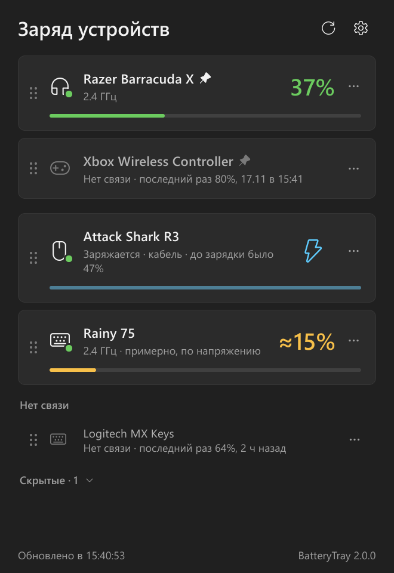

Заряд всех беспроводных устройств — в трее Windows и в строке меню Mac
BatteryTray показывает, сколько заряда осталось у беспроводных наушников, мыши, клавиатуры, геймпада и AirPods, и напоминает до того, как они сядут посреди игры или звонка. Бесплатно и с открытым кодом, без аккаунта и фирменного софта: программа только читает заряд.


Windows 10 и 11 · macOS 13 Ventura и новее, Apple Silicon и Intel · лицензия MIT · Как установить · Все версии


Что умеет
Заряд всегда на виду
Устройство, которое пора заряжать первым, — цветной цифрой у часов или в строке меню; все устройства — в одном окне.
Напоминание не пропустить
Своё окно, когда батарея садится, а не всплывающее уведомление; пока вас нет за компьютером, оно ждёт; свой порог для каждого устройства.
Без фирменного софта
Говорит с устройствами Razer, Logitech, SteelSeries, HyperX, Corsair и многих других через их приёмники — так же, как их собственные программы.
И Bluetooth
AirPods с каждым наушником и кейсом, устройства Magic, гарнитуры, геймпады — любое устройство, заряд которого знает система.
Оверлей в играх
По сочетанию клавиш на пять секунд показывает заряд устройств поверх игр и полноэкранных приложений, не забирая фокус.
Новые устройства — сами
Вставили приёмник или подключили гарнитуру — через несколько секунд она в списке. Обновляется сама с GitHub.
Напоминание до того, как сядет

Когда заряд устройства падает ниже порога, BatteryTray показывает своё окно в углу: его не глушит «Не беспокоить», и оно не забирает фокус у игры. Можно отложить на несколько минут или до зарядки, а без ответа оно само закроется через 10 секунд и вернётся позже — на критическом уровне оно всё равно вернётся.
Устройства
Razer (Barracuda X, BlackShark, Kraken, Viper, DeathAdder, Basilisk и около 45 мышей и клавиатур) · Logitech (MX Master, MX Keys, MX Ergo, мыши G Lightspeed, гарнитуры G и ASTRO) · SteelSeries (Arctis, Aerox, Prime) · HyperX (Cloud, Pulsefire) · Corsair (HS80, Void, Virtuoso, SLIPSTREAM) · ASUS ROG · Attack Shark · VXE / VGN · ATK · Lamzu · Pulsar · Glorious · WLmouse · MCHOSE · AULA · Keychron · Rapoo · JBL Quantum · Audeze · Jabra · Sony INZONE · DualSense и DualShock 4 · геймпады Xbox и Switch · Steam Controller · 8BitDo · AirPods и Beats · Apple Magic Keyboard, Mouse и Trackpad · iPhone и iPad (Mac) · телефоны Android (Windows) · любое Bluetooth-устройство, заряд которого знает система. Полный список.
Вопросы
Есть ли программа, которая показывает заряд беспроводной мыши, клавиатуры или наушников в трее?
Да — BatteryTray, для Windows 10/11 и macOS 13+. Показывает заряд цифрой у часов или в строке меню и напоминает до того, как батарея сядет.
Как видеть заряд Bluetooth-устройств в Windows 11, не открывая «Параметры»?
BatteryTray выводит в трей все Bluetooth-устройства, заряд которых знает Windows, у устройств Bluetooth LE — свежий, прямо с устройства.
Как получить уведомление о низком заряде мыши или наушников?
Задайте порог (по умолчанию 20%, у каждого устройства может быть свой): BatteryTray покажет напоминание, которое не пропадёт само, и ещё раз на критическом уровне.
Как посмотреть заряд AirPods в Windows?
BatteryTray читает заряд каждого наушника и кейса из Bluetooth-сообщений самих AirPods.
Как узнать заряд мыши Razer или Logitech без Synapse и G HUB?
BatteryTray спрашивает устройство через приёмник его же протоколом, как фирменная программа, и показывает заряд в трее.
Есть ли для Mac программа в строке меню, которая показывает заряд всех устройств?
Да: BatteryTray для macOS показывает AirPods, устройства Magic, Bluetooth-гарнитуры и мыши, геймпады, iPhone и iPad по кабелю и игровую периферию на приёмниках.